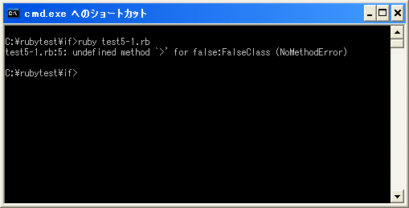

演算子の優先順位(関係演算子、論理演算子)
四則演算子の優先順位は他のページで記載しましたが、ここでは関係演算子と論理演算子を含めて再度演算子の優先順位について確認します。
(優先順位が高い) ! ~ ** * / % + - << >> & | ^ > >= < <= == != && || .. ... ?: = not and or (優先順位が低い)
最も高い優先順位を持つのが「!」や「~」です。逆に最も低い優先順位を持つのが「and」や「or」です。
特に否定の「!」演算子は優先順位が高いため注意が必要です。例えば変数の値が20より大きいかどうか調べ、その結果を否定する場合を考えてみます。
num = 10
if !num > 20 then
print("20以下です")
end
上記のように記述してしまうと、まず変数「num」に対して否定演算子「!」による演算が行われます。変数「num」には「10」が入ってるため「!num」は偽(false）となります。そして「false」が「20」より大きいのかどうか調べようとしますが「false」の元のクラスであるFalseClassには「>」メソッドが無いため結局エラーとなってしまいます。
今回の場合は括弧()を使用し、意図したとおりの順序で演算子による演算が行われるようにします。
num = 10
if !(num > 20) then
print("20以下です")
end
論理演算子の「&&」や「||」は関係演算子の「==」や「>=」などより優先順位が低くなっています。次の例を見てください。
num = 10
if num > 5 && num < 30 then
print("5より大きく30より小さい")
end
上記の場合は「&&」よりも先に「num > 5」と「num < 30」の演算が行われます。これは「&&」演算子の優先順位が「>」や「<」より低いためです。
サンプルプログラム
では簡単なプログラムで確認して見ます。
#! ruby -Ku
require "kconv"
num = 10
if ! num > 20 then
print(Kconv.tosjis("20以下です"))
end
上記のプログラムを「test5-1.rb」として保存します。文字コードはUTF-8です。そして下記のように実行して下さい。

今回は括弧を記述していないため「FalseClass」に「>」メソッドが無いというエラーが発生します。
( Written by Tatsuo Ikura )

著者 / TATSUO IKURA
初心者～中級者の方を対象としたプログラミング方法や開発環境の構築の解説を行うサイトの運営を行っています。